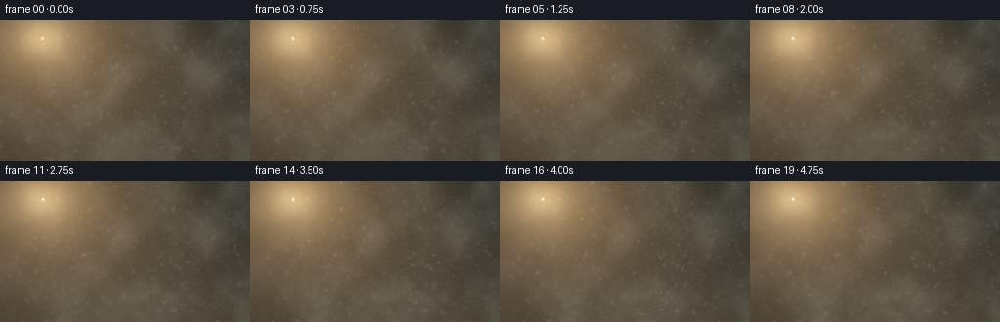
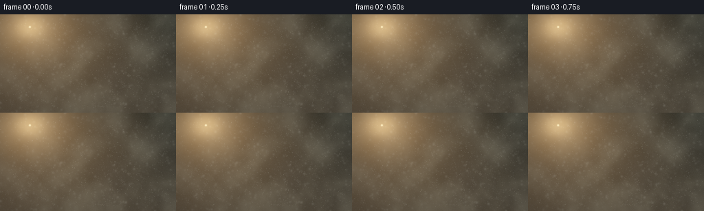
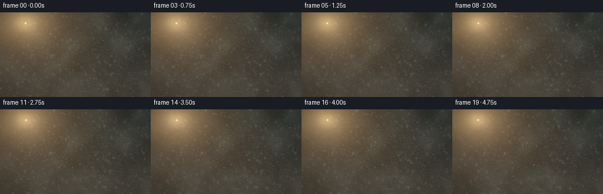
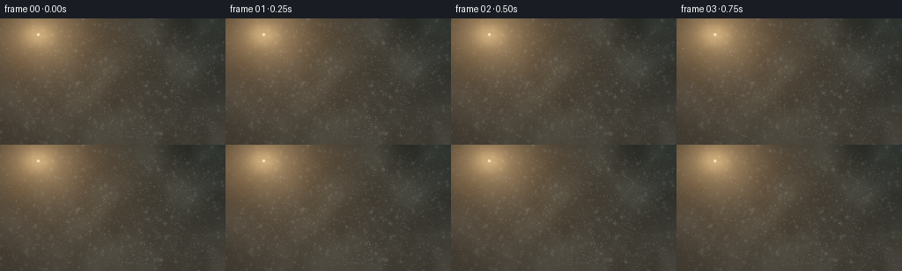

CODING AGENTS AS PIXEL WORLD MODELS
traex/DeepSeek-V4.1-Flash · phygen_079
点击播放 · 原生 RGB 像素
逐轮保存的候选
回放视频、检查图与代码变化。
每份候选均可单独播放。实际图片检查记录在下方工具轨迹中。
候选 01播放与检查图
点击播放 · 原生 RGB 像素


展开代码变化
--- 上一保存版本
+++ 本次保存版本
@@ -0,0 +1,343 @@
+"""Procedurally render sunlit mist particles for the PixelWorld benchmark."""
+
+from __future__ import annotations
+
+import json
+from pathlib import Path
+
+import cv2
+import numpy as np
+from scipy.ndimage import gaussian_filter
+
+import artifact_io
+
+
+ROOT = Path(__file__).resolve().parent
+SEED = 790217
+SUPERSAMPLE = 3
+
+
+def _normalize(values: np.ndarray, low: float = 1.0, high: float = 99.0) -> np.ndarray:
+ lo, hi = np.percentile(values, (low, high))
+ return np.clip((values - lo) / max(hi - lo, 1e-6), 0.0, 1.0)
+
+
+def _noise_texture(rng: np.random.Generator, width: int, height: int) -> np.ndarray:
+ """Build a smooth, cloudy noise field from a small random pyramid."""
+ result = np.zeros((height, width), dtype=np.float32)
+ amplitude = 1.0
+ for level, (base_w, base_h) in enumerate(((7, 4), (14, 8), (28, 16), (56, 32))):
+ field = rng.standard_normal((base_h, base_w)).astype(np.float32)
+ field = cv2.resize(field, (width, height), interpolation=cv2.INTER_CUBIC)
+ result += amplitude * field
+ amplitude *= 0.52 if level < 3 else 0.0
+ result = gaussian_filter(result, sigma=(1.5, 1.5), mode="reflect")
+ return _normalize(result, 1.0, 99.0).astype(np.float32)
+
+
+def _warp_texture(texture: np.ndarray, dx: float, dy: float, scale: float = 1.0) -> np.ndarray:
+ height, width = texture.shape
+ matrix = np.array(
+ [[scale, 0.0, width * (1.0 - scale) * 0.5 + dx],
+ [0.0, scale, height * (1.0 - scale) * 0.5 + dy]],
+ dtype=np.float32,
+ )
+ return cv2.warpAffine(
+ texture,
+ matrix,
+ (width, height),
+ flags=cv2.INTER_LINEAR,
+ borderMode=cv2.BORDER_REFLECT,
+ )
+
+
+def _draw_particles(
+ width: int,
+ height: int,
+ depth: np.ndarray,
+ x: np.ndarray,
+ y: np.ndarray,
+ brightness: np.ndarray,
+ radius: np.ndarray,
+) -> tuple[np.ndarray, np.ndarray, np.ndarray]:
+ """Draw three focus groups: crisp dust, soft mist, and near bokeh."""
+ crisp = np.zeros((height, width), dtype=np.float32)
+ soft = np.zeros_like(crisp)
+ bokeh = np.zeros_like(crisp)
+
+ for index in range(depth.size):
+ point = (int(round(x[index])), int(round(y[index])))
+ if point[0] < -12 or point[0] >= width + 12 or point[1] < -12 or point[1] >= height + 12:
+ continue
+
+ z = float(depth[index])
+ strength = float(brightness[index])
+ if z < 0.20 and index % 7 == 0:
+ cv2.circle(
+ bokeh,
+ point,
+ max(2, int(round(radius[index] * 1.7))),
+ strength,
+ thickness=-1,
+ lineType=cv2.LINE_AA,
+ )
+ elif z < 0.38:
+ cv2.circle(
+ soft,
+ point,
+ max(1, int(round(radius[index]))),
+ strength,
+ thickness=-1,
+ lineType=cv2.LINE_AA,
+ )
+ else:
+ cv2.circle(
+ crisp,
+ point,
+ 1,
+ strength,
+ thickness=-1,
+ lineType=cv2.LINE_AA,
+ )
+ if strength > 0.52 and index % 3 == 0:
+ cv2.circle(
+ soft,
+ point,
+ 2,
+ strength * 0.20,
+ thickness=-1,
+ lineType=cv2.LINE_AA,
+ )
+
+ crisp = gaussian_filter(crisp, sigma=0.52, mode="reflect")
+ soft = gaussian_filter(soft, sigma=2.8, mode="reflect")
+ bokeh = gaussian_filter(bokeh, sigma=7.5, mode="reflect")
+ return crisp, soft, bokeh
+
+
+def build_scene() -> tuple[np.ndarray, dict[str, object]]:
+ spec = json.loads((ROOT / "task_spec.json").read_text())
+ out_w = int(spec["width"])
+ out_h = int(spec["height"])
+ frame_count = int(spec["frames"])
+ fps = float(spec["fps"])
+ width = out_w * SUPERSAMPLE
+ height = out_h * SUPERSAMPLE
+
+ rng = np.random.default_rng(SEED)
+ fog_bank = [_noise_texture(rng, width, height) for _ in range(4)]
+ detail_bank = [_noise_texture(rng, width, height) for _ in range(2)]
+
+ particle_count = 1850
+ particle_x = rng.random(particle_count).astype(np.float32)
+ particle_y = rng.random(particle_count).astype(np.float32)
+ particle_z = (0.12 + 0.88 * rng.random(particle_count) ** 0.72).astype(np.float32)
+ particle_phase = rng.uniform(0.0, np.pi * 2.0, particle_count).astype(np.float32)
+ particle_frequency = rng.uniform(0.25, 0.95, particle_count).astype(np.float32)
+ particle_sway = rng.uniform(0.0015, 0.0060, particle_count).astype(np.float32)
+ particle_gain = rng.uniform(0.38, 1.0, particle_count).astype(np.float32)
+ particle_radius = (0.55 + 4.8 * (1.0 - particle_z) ** 2.4).astype(np.float32)
+
+ yy, xx = np.mgrid[0:height, 0:width].astype(np.float32)
+ xn = (xx + 0.5) / width
+ yn = (yy + 0.5) / height
+
+ frames = []
+ for frame_index in range(frame_count):
+ time = frame_index / fps
+ phase = time * 0.95
+
+ camera_x = 0.0045 * time + 0.010 * np.sin(phase * 0.72 + 0.4)
+ camera_y = -0.0030 * time + 0.0045 * np.sin(phase * 0.54 - 0.7)
+ sun_x = 0.168 + 0.0040 * np.sin(phase * 0.36 + 0.3)
+ sun_y = 0.125 + 0.0030 * np.cos(phase * 0.31)
+
+ # Air is nearly black in shadow and warms toward the lower haze.
+ vertical = yn[:, :, None]
+ sky = np.array([0.016, 0.023, 0.021], dtype=np.float32)
+ lower_haze = np.array([0.051, 0.043, 0.031], dtype=np.float32)
+ color = sky * (1.0 - vertical) + lower_haze * vertical
+
+ dx = (xn - sun_x) * 1.02
+ dy = (yn - sun_y) * 0.74
+ radial = np.sqrt(dx * dx + dy * dy)
+ sun_halo = (
+ 0.48 * np.exp(-((radial / 0.073) ** 2))
+ + 0.31 * np.exp(-((radial / 0.19) ** 2))
+ + 0.13 * np.exp(-((radial / 0.52) ** 2))
+ )
+ sun_rgb = np.array([1.0, 0.57, 0.23], dtype=np.float32)
+ color += sun_halo[:, :, None] * sun_rgb
+
+ # Soft, irregular shafts are built in polar coordinates from the sun.
+ angle = np.arctan2((yn - sun_y), (xn - sun_x))
+ forward = np.clip((angle - 0.22) / 1.20, 0.0, 1.0)
+ angular_noise = (
+ 0.64
+ + 0.20 * np.sin(angle * 27.0 + phase * 0.37)
+ + 0.11 * np.sin(angle * 51.0 - phase * 0.23 + 1.7)
+ )
+ beam = np.zeros((height, width), dtype=np.float32)
+ for center, strength, spread in (
+ (0.43, 0.58, 0.043),
+ (0.66, 0.36, 0.070),
+ (0.90, 0.30, 0.055),
+ (1.12, 0.18, 0.085),
+ ):
+ beam += strength * np.exp(-0.5 * ((angle - center) / spread) ** 2)
+ beam *= angular_noise
+ beam *= forward * np.clip(radial / 0.09, 0.0, 1.0) * np.exp(-radial / 1.05)
+
+ fog_a = _warp_texture(
+ fog_bank[0],
+ -camera_x * width * 0.65 + time * 7.0,
+ -camera_y * height * 0.65 - time * 3.0,
+ 1.0 + 0.012 * np.sin(phase * 0.41),
+ )
+ fog_b = _warp_texture(
+ fog_bank[1],
+ -camera_x * width * 1.15 - time * 11.0,
+ -camera_y * height * 1.15 + time * 4.5,
+ 1.0 - 0.016 * np.cos(phase * 0.33),
+ )
+ fog_c = _warp_texture(
+ fog_bank[2],
+ -camera_x * width * 0.35 + time * 3.5,
+ -camera_y * height * 0.35 + time * 2.0,
+ 1.0,
+ )
+ fog_d = _warp_texture(
+ fog_bank[3],
+ -camera_x * width * 0.8 - time * 5.0,
+ -camera_y * height * 0.8,
+ 1.02,
+ )
+ fog = np.clip(0.43 * fog_a + 0.28 * fog_b + 0.20 * fog_c + 0.09 * fog_d, 0.0, 1.0)
+ fog = np.clip((fog - 0.27) / 0.73, 0.0, 1.0) ** 1.65
+
+ light_on_fog = 0.16 + 1.18 * beam + 0.38 * sun_halo
+ fog_cool = np.array([0.031, 0.044, 0.043], dtype=np.float32)
+ fog_warm = np.array([0.30, 0.215, 0.115], dtype=np.float32)
+ fog_color = fog_cool[None, None, :] + fog_warm[None, None, :] * light_on_fog[:, :, None]
+ color += fog[:, :, None] * fog_color
+
+ # Detail noise keeps the broad haze from looking like a flat gradient.
+ detail = _warp_texture(
+ detail_bank[0],
+ -camera_x * width + time * 13.0,
+ -camera_y * height - time * 5.0,
+ 1.0 + 0.02 * np.sin(phase * 0.5),
+ )
+ fine = _warp_texture(
+ detail_bank[1],
+ -camera_x * width * 1.4 - time * 17.0,
+ -camera_y * height * 1.4 + time * 7.0,
+ 1.0,
+ )
+ texture = np.clip(0.60 * detail + 0.40 * fine, 0.0, 1.0)
+ color += (texture[:, :, None] - 0.5) * (0.010 + 0.024 * beam[:, :, None])
+
+ # The sun core is small, while its wide halo remains soft.
+ sun_px = int(round(sun_x * width))
+ sun_py = int(round(sun_y * height))
+ sun_core = np.zeros((height, width), dtype=np.float32)
+ cv2.circle(sun_core, (sun_px, sun_py), 4, 1.0, thickness=-1, lineType=cv2.LINE_AA)
+ sun_core = gaussian_filter(sun_core, sigma=1.5, mode="reflect")
+ color += sun_core[:, :, None] * np.array([2.2, 1.35, 0.62], dtype=np.float32)
+
+ # Particle projection uses modest parallax so the cloud feels suspended.
+ parallax = 0.62 + 0.88 * (1.0 - particle_z)
+ drift_x = 0.0040 * time + 0.0018 * np.sin(
+ particle_phase + time * particle_frequency * 2.0
+ )
+ drift_y = 0.0018 * np.cos(
+ particle_phase * 1.3 + time * particle_frequency * 1.55
+ )
+ px = (
+ 0.5
+ + (particle_x - 0.5) * (0.78 + 0.42 * (1.0 - particle_z))
+ - camera_x * parallax
+ + drift_x
+ )
+ py = (
+ 0.5
+ + (particle_y - 0.5) * (0.76 + 0.38 * (1.0 - particle_z))
+ - camera_y * parallax
+ + drift_y
+ )
+ px_px = px * width
+ py_px = py * height
+
+ particle_xn = np.clip(px, 0.0, 0.999999)
+ particle_yn = np.clip(py, 0.0, 0.999999)
+ ix = np.minimum((particle_xn * width).astype(np.int32), width - 1)
+ iy = np.minimum((particle_yn * height).astype(np.int32), height - 1)
+ local_beam = beam[iy, ix]
+ local_halo = sun_halo[iy, ix]
+ local_texture = texture[iy, ix]
+
+ depth_visibility = 0.38 + 0.82 * (1.0 - particle_z)
+ shimmer = 0.82 + 0.18 * np.sin(particle_phase + time * particle_frequency * 2.6)
+ strength = particle_gain * depth_visibility * shimmer
+ strength *= 0.25 + 1.05 * local_beam + 0.50 * local_halo
+ strength *= 0.78 + 0.34 * local_texture
+ strength = np.clip(strength, 0.03, 1.55)
+
+ crisp, soft, bokeh = _draw_particles(
+ width,
+ height,
+ particle_z,
+ px_px,
+ py_px,
+ strength,
+ particle_radius,
+ )
+ particle_field = 0.72 * crisp + 0.46 * soft + 0.26 * bokeh
+ particle_light = np.clip(0.26 + 1.05 * beam + 0.46 * sun_halo, 0.0, 1.8)
+ particle_cool = np.array([0.54, 0.66, 0.68], dtype=np.float32)
+ particle_warm = np.array([1.0, 0.73, 0.39], dtype=np.float32)
+ particle_tint = particle_cool[None, None, :] + (
+ particle_warm - particle_cool
+ )[None, None, :] * np.clip(particle_light, 0.0, 1.0)[:, :, None]
+ color += particle_field[:, :, None] * particle_tint
+
+ # Subtle warm/cool separation and a soft lens-edge falloff.
+ color[:, :, 2] *= 0.93
+ color[:, :, 0] *= 1.035
+ vignette = np.exp(-((((xn - 0.52) / 0.72) ** 2 + ((yn - 0.50) / 0.82) ** 2) ** 1.25))
+ color *= (0.63 + 0.37 * vignette)[:, :, None]
+
+ # A restrained, deterministic film grain avoids plastic gradients.
+ grain_rng = np.random.default_rng(SEED + frame_index * 37)
+ grain = grain_rng.normal(0.0, 0.0042, (height, width, 1)).astype(np.float32)
+ color = np.maximum(color + grain, 0.0)
+
+ toned = 1.0 - np.exp(-color * 1.22)
+ toned = np.power(np.clip(toned, 0.0, 1.0), 1.0 / 2.2)
+ frame = (toned * 255.0 + 0.5).astype(np.uint8)
+ frame = cv2.resize(frame, (out_w, out_h), interpolation=cv2.INTER_AREA)
+ frames.append(frame)
+
+ return np.stack(frames), {
+ "frames": frame_count,
+ "fps": fps,
+ "width": out_w,
+ "height": out_h,
+ }
+
+
+def main() -> None:
+ frames, metadata = build_scene()
+ artifact_io.save(frames, ROOT)
+ means = frames.reshape(frames.shape[0], -1).mean(axis=1)
+ motion = np.abs(np.diff(frames.astype(np.int16), axis=0)).mean()
+ print(
+ f"Rendered {metadata['frames']} frames at "
+ f"{metadata['width']}x{metadata['height']} and {metadata['fps']:g} fps; "
+ f"mean luma range {means.min():.1f}-{means.max():.1f}, "
+ f"mean adjacent-frame delta {motion:.2f}."
+ )
+
+
+if __name__ == "__main__":
+ main()
候选 02播放与检查图
点击播放 · 原生 RGB 像素


展开代码变化
--- 上一保存版本
+++ 本次保存版本
@@ -154,24 +154,24 @@
# Air is nearly black in shadow and warms toward the lower haze.
vertical = yn[:, :, None]
- sky = np.array([0.016, 0.023, 0.021], dtype=np.float32)
- lower_haze = np.array([0.051, 0.043, 0.031], dtype=np.float32)
+ sky = np.array([0.010, 0.017, 0.017], dtype=np.float32)
+ lower_haze = np.array([0.036, 0.032, 0.025], dtype=np.float32)
color = sky * (1.0 - vertical) + lower_haze * vertical
dx = (xn - sun_x) * 1.02
dy = (yn - sun_y) * 0.74
radial = np.sqrt(dx * dx + dy * dy)
sun_halo = (
- 0.48 * np.exp(-((radial / 0.073) ** 2))
- + 0.31 * np.exp(-((radial / 0.19) ** 2))
- + 0.13 * np.exp(-((radial / 0.52) ** 2))
+ 0.43 * np.exp(-((radial / 0.062) ** 2))
+ + 0.25 * np.exp(-((radial / 0.17) ** 2))
+ + 0.085 * np.exp(-((radial / 0.46) ** 2))
)
sun_rgb = np.array([1.0, 0.57, 0.23], dtype=np.float32)
color += sun_halo[:, :, None] * sun_rgb
# Soft, irregular shafts are built in polar coordinates from the sun.
angle = np.arctan2((yn - sun_y), (xn - sun_x))
- forward = np.clip((angle - 0.22) / 1.20, 0.0, 1.0)
+ forward = np.clip((angle - 0.29) / 1.08, 0.0, 1.0)
angular_noise = (
0.64
+ 0.20 * np.sin(angle * 27.0 + phase * 0.37)
@@ -215,9 +215,9 @@
fog = np.clip(0.43 * fog_a + 0.28 * fog_b + 0.20 * fog_c + 0.09 * fog_d, 0.0, 1.0)
fog = np.clip((fog - 0.27) / 0.73, 0.0, 1.0) ** 1.65
- light_on_fog = 0.16 + 1.18 * beam + 0.38 * sun_halo
- fog_cool = np.array([0.031, 0.044, 0.043], dtype=np.float32)
- fog_warm = np.array([0.30, 0.215, 0.115], dtype=np.float32)
+ light_on_fog = 0.055 + 0.96 * beam + 0.30 * sun_halo
+ fog_cool = np.array([0.019, 0.030, 0.031], dtype=np.float32)
+ fog_warm = np.array([0.29, 0.196, 0.090], dtype=np.float32)
fog_color = fog_cool[None, None, :] + fog_warm[None, None, :] * light_on_fog[:, :, None]
color += fog[:, :, None] * fog_color
@@ -292,8 +292,8 @@
strength,
particle_radius,
)
- particle_field = 0.72 * crisp + 0.46 * soft + 0.26 * bokeh
- particle_light = np.clip(0.26 + 1.05 * beam + 0.46 * sun_halo, 0.0, 1.8)
+ particle_field = 1.18 * crisp + 0.56 * soft + 0.23 * bokeh
+ particle_light = np.clip(0.14 + 1.18 * beam + 0.38 * sun_halo, 0.0, 1.8)
particle_cool = np.array([0.54, 0.66, 0.68], dtype=np.float32)
particle_warm = np.array([1.0, 0.73, 0.39], dtype=np.float32)
particle_tint = particle_cool[None, None, :] + (
可观测工具轨迹
实际执行的命令与返回图片。
命令 1exit 0
/bin/bash -c "pwd && rg --files -g '"'!*.mp4'"' -g '"'!*.mov'"' | sort"
命令 2exit 0
/bin/bash -c 'cat prompt.txt'
命令 3exit 0
/bin/bash -c 'cat GENERATION_RULES.md'
命令 4exit 0
/bin/bash -c 'cat task_spec.json'
命令 5exit 0
/bin/bash -c "sed -n '1,260p' artifact_io.py"
命令 6exit 0
/bin/bash -c "sed -n '1,260p' player_template.html"
命令 7exit 0
/bin/bash -c "python - <<'PY' import importlib.util mods=['numpy','PIL','scipy','cv2','imageio','matplotlib'] for m in mods: print(m, bool(importlib.util.find_spec(m))) PY command -v ffmpeg || true python --version"
命令 8exit 0
/bin/bash -c "find . -maxdepth 2 -type f -printf '%p %s bytes\\n' | sort"
命令 9exit 0
/bin/bash -c "python - <<'PY'
import scipy, cv2, PIL, numpy as np
print('scipy', scipy.__version__)
print('cv2', cv2.__version__)
print('PIL', PIL.__version__)
print('numpy', np.__version__)
PY"命令 10exit 0
/bin/bash -c 'python generate.py'
命令 11exit 0
/bin/bash -c 'command -v chafa || true; command -v viu || true; command -v jp2 || true; command -v img2txt || true'
命令 12exit 1
/bin/bash -c "python - <<'PY'
from PIL import Image
import numpy as np
im=np.array(Image.open('inspection.png'))
print('inspection', im.shape)
frames=np.load('pixels.npz')['pixels']
print('tensor', frames.shape, frames.dtype)
f=frames.transpose(2,0,1).astype(np.uint8)
print('per-frame mean', np.round(f.mean((1,2,3)),2).tolist())
print('per-frame std ', np.round(f.std((1,2,3)),2).tolist())
print('per-frame p99 ', np.round(np.percentile(f,99,axis=(1,2,3)),1).tolist())
print('frame 0 bbox luma', np.percentile(f[0].mean(2),[0,1,5,25,50,75,95,99,100]).round(1).tolist())
print('adj deltas', np.round(np.abs(np.diff(f.astype(np.int16),axis=0)).mean((1,2,3)),2).tolist())
PY"命令 13exit 0
/bin/bash -c "find . -maxdepth 2 -type f -printf '%p %s bytes\\n' | sort | tail -35"
命令 14exit 0
/bin/bash -c "python - <<'PY'
from pathlib import Path
from PIL import Image
import numpy as np
p=np.load('pixels.npz')['pixels']
f=np.stack([(p>>16)&255,(p>>8)&255,p&255],axis=-1).astype(np.uint8).transpose(2,0,1,3)
print('decoded',f.shape,f.dtype)
print('mean luma',np.round(f.mean((1,2,3)),2).tolist())
print('std luma ',np.round(f.std((1,2,3)),2).tolist())
print('p99 luma ',np.round(np.percentile(f,99,axis=(1,2,3)),1).tolist())
print('frame0 percentiles',np.percentile(f[0].mean(2),[0,1,5,25,50,75,95,99,100]).round(1).tolist())
print('adj deltas',np.round(np.abs(np.diff(f.astype(np.int16),axis=0)).mean((1,2,3)),2).tolist())
print('channel means',f.reshape(20,-1,3).mean(1).round(2).tolist())
# coarse color/luma preview for the first, middle, and last frame
chars=' .,:;irsXA253hMHGS#9B&@'
for idx in [0,9,19]:
lum=f[idx].mean(2)
# preserve aspect ratio using terminal cells roughly 2:1
small=np.array(Image.fromarray(lum.astype(np.uint8)).resize((64,18),Image.Resampling.BOX))
lo,hi=np.percentile(small,[1,99])
q=np.clip((small-lo)/(hi-lo+1e-6),0,1)
print(f'\\nFRAME {idx:02d} luma range {small.min():.0f}-{small.max():.0f}')
for row in q:
print(''.join(chars[min(len(chars)-1,int(v*(len(chars)-1)))] for v in row))
PY"命令 15exit 0
/bin/bash -c "python - <<'PY'
from PIL import Image
import numpy as np
from scipy.ndimage import gaussian_filter
f=np.array(Image.open('frames/00.png')).astype(np.float32)
lum=f.mean(2)
hp=lum-gaussian_filter(lum,2.0)
print('luma quantiles',np.percentile(lum,[0,1,5,10,25,50,75,90,95,99,99.9,100]).round(1).tolist())
print('highpass abs quantiles',np.percentile(np.abs(hp),[50,75,90,95,99,99.5,99.9,100]).round(2).tolist())
print('highpass rms',np.sqrt((hp*hp).mean()).round(2))
print('sun crop luma',lum[:55,:95].mean().round(1),'center',lum[35:110,70:200].mean().round(1),'right',lum[:,200:].mean().round(1))
print('row means',np.round(lum.mean(1)[::12],1).tolist())
print('col means',np.round(lum.mean(0)[::16],1).tolist())
print('saturation pct',np.percentile((f.max(2)-f.min(2)),[25,50,75,90,99]).round(1).tolist())
# Text map of the strongest local-contrast pixels, 2x4 pooling.
s=np.array(Image.fromarray(np.abs(hp).clip(0,40).astype(np.uint8)).resize((64,18),Image.Resampling.BOX))
chars=' .:-=+*#%@'
for row in s:
print(''.join(chars[min(9,int(v/40*10))] for v in row))
PY"命令 16exit 0
/bin/bash -c "python - <<'PY'
from PIL import Image
import numpy as np
f=np.array(Image.open('frames/00.png')).astype(np.float32)
g=f.mean(2)
# print a native-resolution luma crop from the illuminated center using block glyphs
for y0,y1,x0,x1 in [(0,48,40,136),(40,96,48,160),(80,144,0,128)]:
c=g[y0:y1,x0:x1]
c=np.array(Image.fromarray(c.astype(np.uint8)).resize((64,(y1-y0)//2),Image.Resampling.BOX))
print(f'CROP x{x0}:{x1} y{y0}:{y1}')
chars=' .:-=+*#%@'
lo,hi=np.percentile(c,[1,99])
for row in c:
print(''.join(chars[min(9,int(np.clip((v-lo)/(hi-lo+1e-6),0,.999)*10))] for v in row))
PY"命令 17exit 0
/bin/bash -c "python - <<'PY'
from pathlib import Path
import shutil
import numpy as np
import artifact_io
root=Path('.')
out=root/'candidates'/'candidate_01'
out.mkdir(parents=True,exist_ok=True)
for name in ('prompt.txt','task_spec.json'):
shutil.copyfile(root/name,out/name)
packed=np.load(root/'pixels.npz')['pixels']
frames=np.stack([(packed>>16)&255,(packed>>8)&255,packed&255],axis=-1).astype(np.uint8).transpose(2,0,1,3)
artifact_io.save(frames,out)
print(out, frames.shape)
PY"命令 18exit 0
/bin/bash -c 'python generate.py'
命令 19exit 0
/bin/bash -c "python - <<'PY'
from pathlib import Path
from PIL import Image
import numpy as np
from scipy.ndimage import gaussian_filter
p=np.load('pixels.npz')['pixels']
f=np.stack([(p>>16)&255,(p>>8)&255,p&255],axis=-1).astype(np.uint8).transpose(2,0,1,3)
lum=f.mean(3)
print('mean',f.reshape(20,-1,3).mean(1).round(1).tolist())
print('p99 luma',np.percentile(lum,99,axis=(1,2)).round(1).tolist())
print('delta',np.abs(np.diff(f.astype(np.int16),axis=0)).mean((1,2,3)).round(2).tolist())
for idx in [0,9,19]:
l=lum[idx].astype(np.float32)
hp=l-gaussian_filter(l,2.0)
print('FRAME',idx,'quantiles',np.percentile(l,[1,5,25,50,75,95,99]).round(1).tolist(),'highpass rms',np.sqrt((hp*hp).mean()).round(2),'hp99',np.percentile(np.abs(hp),99).round(1))
chars=' .,:;irsXA253hMHGS#9B&@'
small=np.array(Image.fromarray(l.astype(np.uint8)).resize((64,18),Image.Resampling.BOX))
lo,hi=np.percentile(small,[1,99])
q=np.clip((small-lo)/(hi-lo+1e-6),0,1)
for row in q:
print(''.join(chars[min(len(chars)-1,int(v*(len(chars)-1)))] for v in row))
PY"命令 20exit 1
/bin/bash -c "python - <<'PY'
from pathlib import Path
import base64, json, re
import numpy as np
from PIL import Image
root=Path('.')
packed=np.load(root/'pixels.npz')['pixels']
assert packed.shape==(144,256,20) and packed.dtype==np.uint32
frames=np.stack([(packed>>16)&255,(packed>>8)&255,packed&255],axis=-1).astype(np.uint8).transpose(2,0,1,3)
assert frames.shape==(20,144,256,3)
for i, frame in enumerate(frames):
png=np.asarray(Image.open(root/'frames'/f'{i:02d}.png'))
assert np.array_equal(png,frame), i
html=(root/'index.html').read_text()
match=re.search(r\"const DATA=(\\{.*?\\}),W=DATA\\.width\",html,re.S)
assert match
data=json.loads(match.group(1))
assert (data['width'],data['height'],data['frames'],data['fps'])==(256,144,20,4)
def unpack(s):
b=np.frombuffer(base64.b64decode(s),dtype='<u4')
return b.copy()
recon=[unpack(data['first'])]
for encoded in data['deltas']:
f=recon[-1].copy(); p=unpack(encoded); k=0
while k<len(p):
start=int(p[k]); count=int(p[k+1]); k+=2
f[start:start+count]=p[k:k+count]; k+=count
recon.append(f)
recon=np.stack(recon).reshape(20,144,256)
assert np.array_equal(recon,packed), 'HTML deltas do not reconstruct pixels.npz'
deltas=np.abs(frames[1:].astype(np.int16)-frames[:-1].astype(np.int16))
assert deltas.mean()>0.5 and np.isfinite(deltas).all()
assert len(list((root/'frames').glob('*.png')))==20
print('PASS: 20/20 PNG frames match packed RGB tensor')
print('PASS: HTML first frame + 19 deltas reconstruct the tensor exactly')
print('PASS: dimensions 256x144, fps 4.0, duration 5.0s, audio none')
print(f'PASS: motion range {deltas.mean():.2f}-{np.abs(np.diff(frames.astype(np.int16),axis=0)).mean((1,2,3)).max():.2f} mean channel levels')
print(f'artifacts: pixels.npz {Path(\"pixels.npz\").stat().st_size} bytes, index.html {Path(\"index.html\").stat().st_size} bytes')
PY"命令 21exit 0
/bin/bash -c "python - <<'PY'
from pathlib import Path
import base64,json,re
import numpy as np
packed=np.load('pixels.npz')['pixels'].reshape(20,-1)
html=Path('index.html').read_text()
m=re.search(r\"const DATA=(\\{.*?\\}),W=DATA\\.width\",html,re.S)
print('match',bool(m),len(m.group(1)) if m else None)
data=json.loads(m.group(1))
def unpack(s):
b=np.frombuffer(base64.b64decode(s),dtype='<u4')
return b.copy()
first=unpack(data['first'])
print('first',first.shape,packed[0].shape,np.array_equal(first,packed[0]),np.flatnonzero(first"'!=packed[0])[:10])
f=first.copy()
for i,s in enumerate(data['"'deltas']):
p=unpack(s); k=0
while k<len(p):
start=int(p[k]); count=int(p[k+1]); k+=2
f[start:start+count]=p[k:k+count]; k+=count
neq=np.flatnonzero(f"'!=packed[i+1])
print(i+1,'"'packet',len(p),'neq',len(neq),neq[:5])
if len(neq):
j=neq[0]; print(' ',f[j],packed[i+1][j], 'position',j)
break
PY"命令 22exit 0
/bin/bash -c "python - <<'PY'
from pathlib import Path
import base64,json,re,numpy as np
packed=np.load('pixels.npz')['pixels'].reshape(20,-1)
h=Path('index.html').read_text(); d=json.loads(re.search(r\"const DATA=(\\{.*?\\}),W=DATA\\.width\",h,re.S).group(1))
raw=base64.b64decode(d['first']); b=np.frombuffer(raw,dtype='<u4')
print('rawlen',len(raw),'count',len(b))
print('packed',packed[0][:10].tolist())
print('decoded',b[:10].tolist())
print('hex packed', [hex(int(x)) for x in packed[0][:5]])
print('hex decode', [hex(int(x)) for x in b[:5]])
print('byte packed',packed[0][:3].astype('<u4').tobytes().hex())
print('byte raw',raw[:12].hex())
# artifact_io called np.asarray(array,dtype=\"<u4\").tobytes() where packed maybe non-contiguous? packed[0].reshape(-1)
a=packed[0].reshape(-1)
print('contig',a.flags.c_contiguous, a.dtype, a[:3].tobytes().hex())
PY"命令 23exit 0
/bin/bash -c "python - <<'PY'
from pathlib import Path
import shutil
import numpy as np
import artifact_io
root=Path('.')
out=root/'candidates'/'candidate_02'
out.mkdir(parents=True,exist_ok=True)
for name in ('prompt.txt','task_spec.json'):
shutil.copyfile(root/name,out/name)
tensor=np.load(root/'pixels.npz')['pixels']
frames=np.stack([(tensor>>16)&255,(tensor>>8)&255,tensor&255],axis=-1).astype(np.uint8).transpose(2,0,1,3)
artifact_io.save(frames,out)
print('Saved',out)
PY"命令 24exit 0
/bin/bash -c "python - <<'PY'
from pathlib import Path
import base64, json, re
import numpy as np
from PIL import Image
root=Path('.')
tensor=np.load(root/'pixels.npz')['pixels']
assert tensor.shape==(144,256,20) and tensor.dtype==np.uint32
frames=np.stack([(tensor>>16)&255,(tensor>>8)&255,tensor&255],axis=-1).astype(np.uint8).transpose(2,0,1,3)
assert frames.shape==(20,144,256,3)
for i, frame in enumerate(frames):
png=np.asarray(Image.open(root/'frames'/f'{i:02d}.png'))
assert np.array_equal(png,frame), i
html=(root/'index.html').read_text()
match=re.search(r\"const DATA=(\\{.*?\\}),W=DATA\\.width\",html,re.S)
assert match
data=json.loads(match.group(1))
assert (data['width'],data['height'],data['frames'],data['fps'])==(256,144,20,4)
assert data['audio'] is None
def unpack(s):
return np.frombuffer(base64.b64decode(s),dtype='<u4').copy()
recon=[unpack(data['first'])]
for encoded in data['deltas']:
f=recon[-1].copy(); p=unpack(encoded); k=0
while k<len(p):
start=int(p[k]); count=int(p[k+1]); k+=2
f[start:start+count]=p[k:k+count]; k+=count
recon.append(f)
recon=np.stack(recon).reshape(20,144,256).transpose(1,2,0)
assert np.array_equal(recon,tensor), 'HTML deltas do not reconstruct pixels.npz'
deltas=np.abs(np.diff(frames.astype(np.int16),axis=0)).mean((1,2,3))
assert len(list((root/'frames').glob('*.png')))==20
assert np.isfinite(frames).all() and frames.min()>=0 and frames.max()<=255
print('PASS: 20/20 PNG frames match packed RGB tensor')
print('PASS: HTML first frame + 19 deltas reconstruct the tensor exactly')
print('PASS: dimensions 256x144, fps 4.0, duration 5.0s, audio none')
print(f'PASS: mean adjacent-frame delta {deltas.mean():.2f} (range {deltas.min():.2f}-{deltas.max():.2f})')
print(f'artifacts: pixels.npz {Path(\"pixels.npz\").stat().st_size} bytes, index.html {Path(\"index.html\").stat().st_size} bytes')
PY"保存候选 2 份；完成命令 24 次；可验证图片返回 0 张。原始 API 响应与完整日志保留在本地。